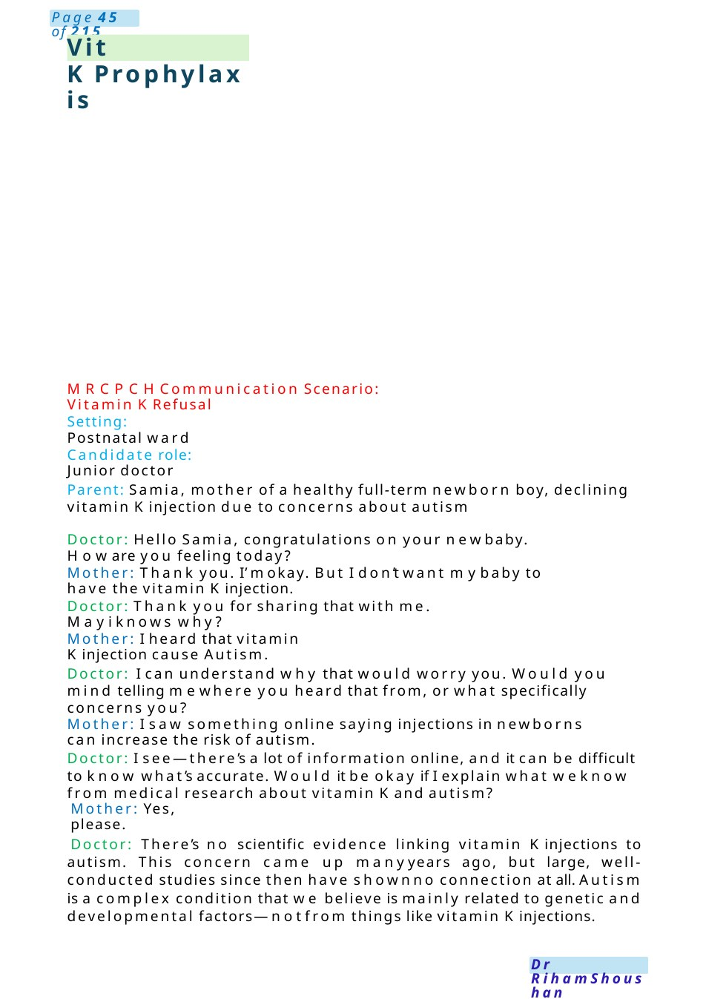
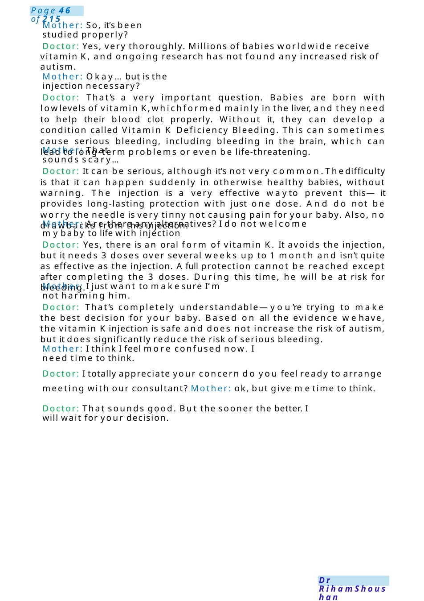
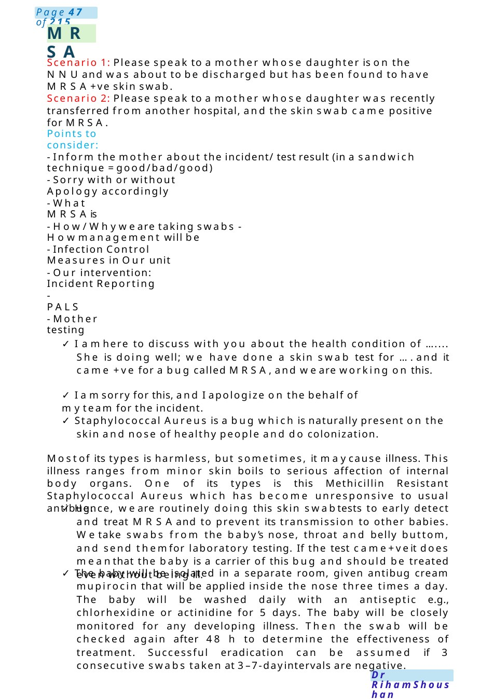

Vit KProphylaxis
MRCPCHCommunication Scenario: Vitamin KRefusal Parent: Samia, mother of a healthy full-term newborn boy, declining vitamin Kinjection due to concerns about autism
Scenario Summary
MRCPCHCommunication Scenario: Vitamin KRefusal Parent: Samia, mother of a healthy full-term newborn boy, declining vitamin Kinjection due to concerns about autism
Full Original Scenario

Vit KProphylaxis
MRCPCHCommunication Scenario: Vitamin KRefusal
Setting: Postnatal ward
Candidate role: Junior doctor
Parent: Samia, mother of a healthy full-term newborn boy, declining vitamin Kinjection due to concerns about autism
Doctor: Hello Samia, congratulations on your newbaby. Howare you feeling today?
Mother: Thank you. I’mokay. But I don’t want mybaby to have the vitamin Kinjection.
Doctor: Thank you for sharing that with me. Mayi knows why?
Mother: I heard that vitamin Kinjection cause Autism.
Doctor: I can understand why that would worry you. Would you mind telling mewhere you heard that from, or what specifically concerns you?
Mother: I saw something online saying injections in newborns can increase the risk of autism.
Doctor: I see—there’s a lot of information online, and it can be difficult to know what’s accurate. Would it be okay if I explain what weknow from medical research about vitamin Kand autism?
Mother: Yes, please.
Doctor: There’s no scientific evidence linking vitamin Kinjections to autism. This concern came up manyyears ago, but large, well-conducted studies since then have shownno connection at all. Autism is a complex condition that we believe is mainly related to genetic and developmental factors—notfrom things like vitamin Kinjections.

Mother: So, it’s been studied properly?
Doctor: Yes, very thoroughly. Millions of babies worldwide receive vitamin K, and ongoing research has not found any increased risk of autism.
Mother: Okay...but is the injection necessary?
Doctor: That’s a very important question. Babies are born with lowlevels of vitamin K,whichformed mainly in the liver, and they need to help their blood clot properly. Without it, they can develop a condition called Vitamin K Deficiency Bleeding. This can sometimes cause serious bleeding, including bleeding in the brain, which can lead to long-term problems or even be life-threatening.
Mother: That sounds scary...
Doctor: It can be serious, although it’s not very common.Thedifficulty is that it can happen suddenly in otherwise healthy babies, without warning. The injection is a very effective wayto prevent this—it provides long-lasting protection with just one dose. And do not be worry the needle is very tinny not causing pain for your baby. Also, no drawbacks from this injection.
Mother: Are there any alternatives? I do not welcome mybaby to life with injection
Doctor: Yes, there is an oral form of vitamin K. It avoids the injection, but it needs 3 doses over several weeks up to 1 month and isn’t quite as effective as the injection. Afull protection cannot be reached except after completing the 3 doses. During this time, he will be at risk for bleeding.
Mother: I just want to makesure I’m not harming him.
Doctor: That’s completely understandable—you’re trying to make the best decision for your baby. Based on all the evidence wehave, the vitamin Kinjection is safe and does not increase the risk of autism, but it does significantly reduce the risk of serious bleeding.
Mother: I think I feel more confused now. I need time to think.
Doctor: I totally appreciate your concern do you feel ready to arrange meeting with our consultant? Mother: ok, but give metime to think.
Doctor: That sounds good. But the sooner the better. I will wait for your decision.

MRSA
Scenario 1: Please speak to a mother whose daughter is on the NNUand was about to be discharged but has been found to have MRSA+ve skin swab.
Scenario 2: Please speak to a mother whose daughter was recently transferred from another hospital, and the skin swab came positive for MRSA.
Points to consider:
- Inform the mother about the incident/ test result (in a sandwich technique =good/bad/good)
- Sorry with or without Apology accordingly
- What MRSAis
- How/Whywe are taking swabs - Howmanagement will be
- Infection Control Measures in Our unit
- Our intervention: Incident Reporting
- PALS
- Mother testing
- I amhere to discuss with you about the health condition of ....... She is doing well; we have done a skin swab test for ....and it came +ve for a bug called MRSA,and we are working on this.
- I amsorry for this, and I apologize on the behalf of myteam for the incident.
- Staphylococcal Aureus is a bug which is naturally present on the skin and nose of healthy people and do colonization.
Mostof its types is harmless, but sometimes, it maycause illness. This illness ranges from minor skin boils to serious affection of internal body organs. One of its types is this Methicillin Resistant Staphylococcal Aureus which has become unresponsive to usual antibug.
- Hence, we are routinely doing this skin swabtests to early detect and treat MRSAand to prevent its transmission to other babies. Wetake swabs from the baby’s nose, throat and belly buttom, and send themfor laboratory testing. If the test came+veit does meanthat the baby is a carrier of this bug and should be treated even without being ill.
- The baby will be isolated in a separate room, given antibug cream mupirocin that will be applied inside the nose three times a day. The baby will be washed daily with an antiseptic e.g., chlorhexidine or actinidine for 5 days. The baby will be closely monitored for any developing illness. Then the swab will be checked again after 48 h to determine the effectiveness of treatment. Successful eradication can be assumed if 3 consecutive swabs taken at 3–7-dayintervals are negative.